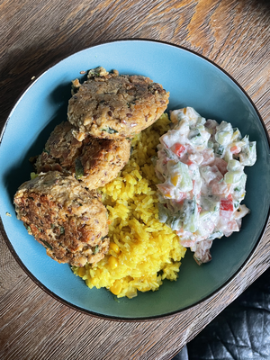

I hope I can make it to the Small Web Potluck 2026! It is 20:30 on the last day of the event.
I would like to thank Skep and myrtletribe for organizing it and accepting my entry super late and without a working image lol
I made a yellow rice to earn the yellow badge and added some homemade pea protein balls and a salad. Check it out!

EDIT: While I work on fixing the notworking image, I would like to take time to write more and also thank Oopsie doodle for introducing me to the Small Web Potluck!
I immediately loved the idea but struggeled to find time and occasion to cook someting as I rather cook big portion once and freeze it. The last day of the Potluck, I had a friend over for a movie. It was a great occasion to cook and eat sometiong that was not meal prepped. We watched Kingsman while eating my dish.